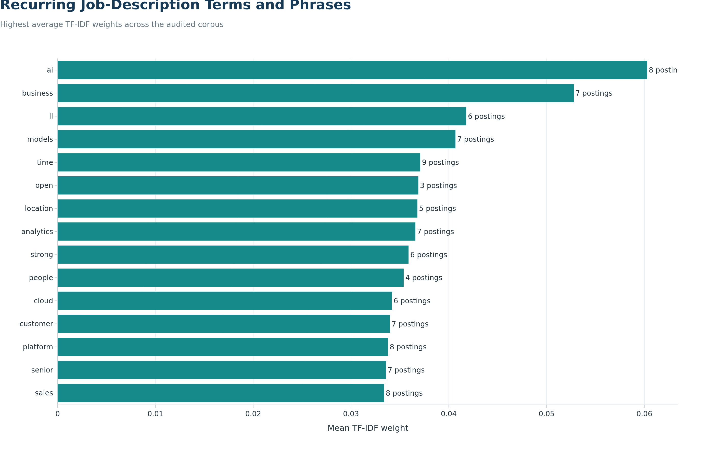

Extracting Skills and Themes from Job Descriptions
Objective
We use natural language processing to identify recurring language and technical skills in the descriptions of our 10 audited software-publisher postings. The analysis complements the structured Lightcast skill fields and helps us assess whether the narrative descriptions emphasize the same requirements.
Our NLP results are descriptive. With only 10 documents, we do not treat term frequency as a population-level estimate or train a predictive language model.
Description Corpus
Code
from html import unescapefrom pathlib import Pathimport reimport numpy as npimport pandas as pdfrom IPython.display import Markdownfrom IPython.display import displayfrom sklearn.feature_extraction.text import ENGLISH_STOP_WORDSfrom sklearn.feature_extraction.text import TfidfVectorizerimport plotly.graph_objects as gofrom plotly_theme import BLUEfrom plotly_theme import NAVYfrom plotly_theme import TEALfrom plotly_theme import apply_job_market_themecorpus_path = Path("data/processed/step3/career_market_descriptions.csv")structured_skills_path = Path("data/processed/step3/career_market_skills.csv")figure_dir = Path("figures/step3")output_dir = Path("outputs/step3")figure_dir.mkdir(parents=True, exist_ok=True)output_dir.mkdir(parents=True, exist_ok=True)corpus = pd.read_csv( corpus_path, dtype={"JOB_ID": "string"})structured_skills = pd.read_csv( structured_skills_path, dtype={"JOB_ID": "string"})required_columns = {"JOB_ID","TITLE_RAW","ROLE_SEGMENT","BODY"}missing_columns = required_columns -set(corpus.columns)if missing_columns:raiseValueError(f"The NLP corpus is missing columns: {sorted(missing_columns)}" )if corpus["JOB_ID"].duplicated().any():raiseValueError("The NLP corpus must contain one row per JOB_ID.")if corpus["BODY"].fillna("").str.strip().eq("").any():raiseValueError("Every selected posting must have a job description.")def clean_description(value):"""Remove markup and normalize text while retaining technical symbols.""" text = unescape(str(value)) text = re.sub(r"<[^>]+>", " ", text) text = re.sub(r"https?://\S+", " ", text) text = re.sub(r"[^A-Za-z0-9+#./-]+", " ", text) text = text.lower()return" ".join(text.split())corpus["CLEAN_BODY"] = corpus["BODY"].apply(clean_description)corpus["NLP_WORD_COUNT"] = corpus["CLEAN_BODY"].str.split().str.len()corpus_summary = pd.DataFrame({"Measure": ["Distinct descriptions","Median words per description","Shortest description","Longest description" ],"Value": [ corpus["JOB_ID"].nunique(),int(corpus["NLP_WORD_COUNT"].median()),int(corpus["NLP_WORD_COUNT"].min()),int(corpus["NLP_WORD_COUNT"].max()) ]})corpus_summary.to_csv( output_dir /"nlp_corpus_summary.csv", index=False)corpus_summary
Measure
Value
0
Distinct descriptions
10
1
Median words per description
917
2
Shortest description
228
3
Longest description
1510
We remove HTML markup, web addresses, repeated whitespace, and most punctuation. We preserve symbols such as + and # because they can be part of technical skill names. Each posting remains a separate document.
TF-IDF increases the weight of terms that are important to some postings but not universal across all descriptions. We include one-word and two-word terms, require appearance in at least two postings, and remove common English and job advertisement boilerplate words.
Code
top_tfidf_plot = ( tfidf_results .head(15) .sort_values("Mean TF-IDF", ascending=True))fig_tfidf = go.Figure( data=go.Bar( x=top_tfidf_plot["Mean TF-IDF"], y=top_tfidf_plot["Term or Phrase"], orientation="h", marker={"color": TEAL}, text=top_tfidf_plot["Posting Count"], texttemplate="%{text} postings", textposition="outside", customdata=top_tfidf_plot[["Posting Count"]].to_numpy(), hovertemplate=("%{y}<br>""Mean TF-IDF: %{x:.3f}<br>""Postings: %{customdata[0]}""<extra></extra>" ) ))apply_job_market_theme( fig_tfidf, title="Recurring Job-Description Terms and Phrases", subtitle="Highest average TF-IDF weights across the audited corpus", x_title="Mean TF-IDF weight", y_title="", note=("Terms must appear in at least two descriptions; generic job-posting ""language is excluded." ), height=720, showlegend=False, grid_axis="x")fig_tfidf.write_image( figure_dir /"nlp_top_tfidf_terms.png", width=1400, height=900, scale=2)

Terms and phrases with the highest average TF-IDF weights.
Description-Based Skill Extraction
We use transparent regular-expression patterns to identify selected technical skills in each description. A posting is counted once per skill even if the term appears multiple times. This produces posting prevalence rather than raw word frequency.
The structured fields and description text are not expected to match perfectly. Structured skills may represent standardized concepts or inferred labels, while description matching requires the employer to use one of our explicit terms.
Our highest-weight recurring terms or phrases include ai, business, ll, models, time. The most frequently detected skills in description text include Machine Learning, Python, AWS, Generative AI, Java. The largest difference between the two skill sources occurs for Predictive Modeling, with 0 description mentions and 3 structured records.
The comparison demonstrates why we preserve both sources. Structured fields provide standardized categories suitable for market-wide counting, while the description text preserves the employer’s wording and context. Agreement between the two strengthens the evidence that a skill is important; a mismatch is a prompt for review rather than automatic proof that either source is wrong.
Career Implications
Description-based NLP gives us an additional check on the priorities identified in our skill-gap and clustering analyses. Skills that appear in both the text and structured fields provide the strongest evidence for our learning plan. Terms appearing only in descriptions can reveal emerging or contextual requirements, while structured-only skills may reflect standardization or concepts described indirectly by employers.
We will prioritize repeated cross-source signals when choosing portfolio projects. For example, an end-to-end project can demonstrate Python and SQL for analysis, Machine Learning for modeling, MLOps for reproducibility, and a cloud platform for deployment. This produces evidence of integrated capability rather than isolated course completion.
Limitations
The corpus contains only 10 descriptions, including repeated standardized job titles, so one employer’s wording can materially affect the results. TF-IDF measures textual distinctiveness rather than economic demand or proficiency. Regular-expression extraction can miss synonyms and can occasionally match a term outside its intended technical context. We therefore use the NLP results as supporting evidence alongside structured skill counts, not as a replacement for the audited market panel.